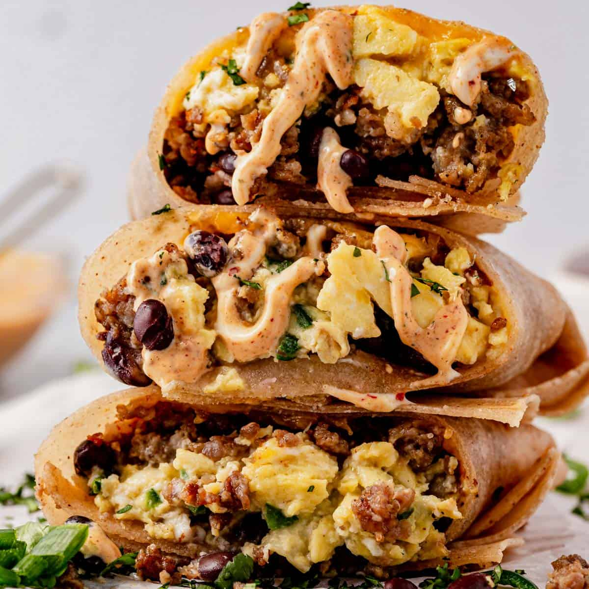

Protein Breakfast Burritos

High Protein and easy to make breakfast burritos
Ingredients
- 1/2 lb ground breeakfast sausage
- 1 poblano pepper seeded and diced
- 12 large eggs whisked
- 1 teaspoon kosher salt
- 1/4 teaspoon black pepper
- 2 oz cream cheese cubed (optional)
- 6 large tortillas
- 6-8 oz shredded cheddar cheese
- 1 (15oz) can of black beans drained and rinsed
- To serve: green onions, cilantro, Chipotle mayo, pico de gallo, or avacodo
Step by Step Process
- Preheat the oven to 425°F if you plan to bake a burrito right away.
- Heat a large skillet over medium-high heat. Add the ground sausage and brown, breaking into pieces, until no pink
remains. Transfer it to a paper towel lined platem, leaving a bit of the fat in the bottom of the pan. 1.2lb ground breakfast sausage
- Turn the heat down to medium and add the diced peppers. Cook to soften, 2-3 min. 1 pablano pepper
- Turn the stove down to medium-low heat and pour in the whisked eggs and sprinkle with salt and pepper to taste.
Allow it to cook fir 1-2 min until the bottom starts to set then pull up the edges of the eggs and let the eggs run underneath.
Add the cubed cream cheese and continue to cook for another 1-2 min until the cheese melts and the eggs are just barely cooked
and very soft. Remove from the heat. 12 large eggs, 1 tsp kosher salt, 1/4 tsp black pepper, 2 oz cream cheese
- To assemble the burritos, warm tortillas individually in for 20 sec in the microwave or char over the open gas flame
for a few seconds on each side, until soft and pliable. Sprinkle the shredded cheese on the bottom of the tortilla then
add black beans, eggs, and cooked sausage. 6 large tortillas, 6-8 oz shredded cheddar cheese, 1 (15oz) can of black beans
- Fold the tortilla over the filling, fold in each side, and continue rolling forward. Side-ends of the tortillas over filling and roll forward.
Wrap the tortillas in foil and bake for 8-10 min, until heated through and the cheese is melted.
- For freezer burritos, wrap each burrito in foil before baking and store them in a freezer bag. Bake them frectly from frozen at 425°F for 20 min.
Alternately, remove from the foil and heat in the microwave for 2 min.
Home